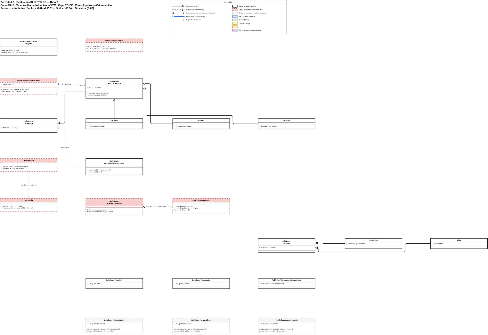
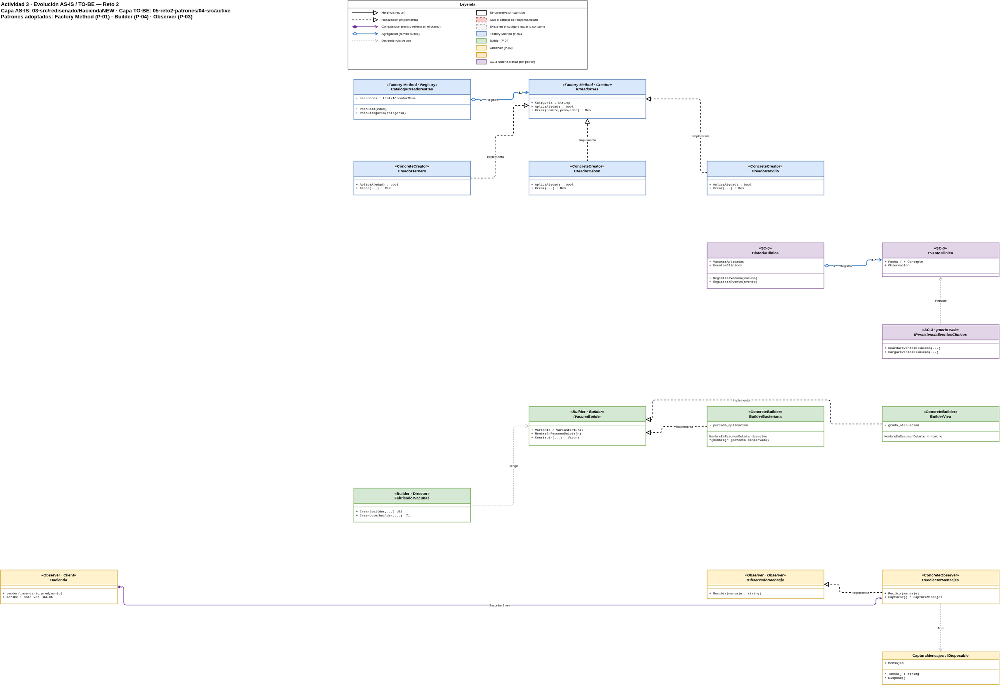

Arquitectura de Software
Santiago HM · Simón BU · Sebastián QJ
AS-IS analizado: 03-src/redisenado/HaciendaNEW/ (Reto 1). TO-BE verificado: 05-reto2-patrones/04-src/active/. El directorio 04-src/baseline-input-2026-08-31/ no se usó como AS-IS: ya contiene Creacion/, Construccion/ y RecolectorMensajes.
Cada punto se mide por sí mismo; no se suman archivos de otro punto. Se califica Alta cuando combina (a) al menos cuatro decisiones o reglas que deben sincronizarse y (b) riesgo de fallo silencioso o de regresión; Media cuando una de esas dos condiciones no se cumple. La superficie es el número de archivos que cambiaría ese punto, las reglas son los sitios duplicados del AS-IS y el riesgo describe el fallo comprobable. La cercanía a una SC solo se informa como relación directa, indirecta o inexistente: no altera el puntaje.
| ID | Evidencia AS-IS (ubicación) | Síntoma y presión de cambio | Superficie / reglas propias | Riesgo | Prioridad / relación con SC |
|---|---|---|---|---|---|
| P-01 | Potrero.cs:40-160 y PersistenciaService.cs:512-526,571-574 | Una cuarta categoría de Res exige sincronizar la traducción de tipo y creación en Potrero, más dos reconstrucciones desde persistencia. El fallback _ => new Ternero convierte tipos desconocidos sin aviso. | 4 archivos: Potrero, PersistenciaService, subtipo nuevo y vista de alta; 5 decisiones. | Categoría guardada puede reaparecer como ternero. | Alta. Sin vínculo directo con SC-2; un chip no exige un subtipo nuevo. |
| P-02 | PublisherPesoMin.cs, PublisherPesoVenta.cs, PublisherVacunacionCompletada.cs, ReglaRes.cs, ReglaVacuna.cs, ResService.cs y dos vistas | Se discrimina Ternero/Cebon/Novillo en varios sitios aunque Res ya tiene polimorfismo para cupos de vacuna. Una categoría no reconocida puede dejar el umbral en cero y silenciar el aviso. | 8 archivos; 6 reglas de tipo. | Alerta de peso omitida. | Alta. Sin vínculo directo con SC-2; geolocalización no obliga a cambiar estas reglas. |
| P-03 | Potrero.cs:112,118,124,130 y Hacienda.cs:225,231,294; Program.cs registra Hacienda singleton | Siete += ocurren dentro de operaciones y no se liberan. Cada llamada añade handlers sobre publishers de instancia; con vida larga, se repiten avisos de invocaciones anteriores. | 8 archivos para comprender/publicar un aviso; 7 suscripciones en 3 métodos. | Mensajes duplicados y memoria retenida. | Alta. No se atribuye a SC-2: un chip podría requerir aviso, pero no lo especifica. |
| P-04 | FabricadorVacunas.cs:60,98, ICreacionVacuna.cs:12-16, Hacienda.cs:257-278, VacunaService.cs:26-36 | Dos lotes duplican el proceso y las cuatro firmas publican la variación. El lote bacteriano imprime literalmente {nombre} por un $ ausente. Un tercer tipo requiere cambiar contrato y coordinación. | 7 clases / 11 archivos; 3 decisiones de variante y 4 firmas. | Divergencia de lotes y cambios contractuales en cascada. | Alta. Relación indirecta con SC-3: la historia clínica usa vacunas, pero SC-3 no pide nuevos tipos de vacuna. |
| P-05 | Res.cs:104-126, Ternero.cs, Cebon.cs, Novillo.cs, TipoVacuna.cs, ReglaVacuna.cs | Cada nuevo tipo de vacuna agrega propiedades abstractas en Res y respuestas en tres subtipos; además el enum duplica la clasificación. | 6 archivos; 4 cambios mínimos para el nuevo tipo. | Límite incorrecto o rama default poco diagnóstica. | Media. Relación indirecta con SC-3, no causa directa. |
| P-06 | Autenticacion.cs, IAutenticacion.cs, InterceptorAutenticacion.cs, UsuarioService.cs, Program.cs | Las reglas de roles existen pero no se instancian ni registran; el flujo vivo autentica sin autorizar. | 6 archivos; 219 líneas de control no ejecutado. | Cambio de permisos puede editar el camino muerto. | Media. Sin SC asociada. |
| P-07 | Hacienda.cs, tres Inventario*, Venta.cs, RegistroVenta.cs, ValidarVenta.cs, ResService.cs | Venta genérica y venta de res convivían; los inventarios copian la misma lógica. | 8 archivos; 3 implementaciones duplicadas. | Reglas de venta divergen. | Media. Sin SC asociada. |
Se intervienen P-01, P-03 y P-04 mediante Factory Method, Observer y Builder respectivamente. P-02, P-05, P-06 y P-07 permanecen como deuda medida: no se declara un patrón donde el código o el alcance no lo justifican.
La evidencia histórica de 00-lectura-en-frio/ permite marcar, sin inventar autoría: P-01 (propio: reglas por tipo de Res; Santiago), P-04 (propio: Vacuna como lugar costoso; Simón) y N-01 (propio: PersistenciaService; Santiago y Sebastián). Las lecturas son más generales que esta redacción V2; por eso se declara la correspondencia, no se les atribuyen hallazgos de línea que no escribieron.
N-02 — envoltura repetitiva de excepciones y mensajes observables. En el AS-IS hay 32 sitios en 14 clases con Error inesperado en .... Sustituirlos por excepciones tipadas alteraría texto expuesto por las vistas, perdería la caracterización existente y no implementa una SC autorizada. Es deuda técnica real, pero el riesgo de cambiar salida observable supera el beneficio en este reto.
N-01 (formatos de persistencia) y N-03 (condicionales de presentación) se conservaron como alternativas, no como pendientes: el primero excede el alcance de dominio y el segundo toca UI.
Los conteos se obtienen sobre 03-src/redisenado/HaciendaNEW/, excluyendo bin/ y obj/:
rg -n 'new (Ternero|Novillo|Cebon)|is (Ternero|Novillo|Cebon)|evt_.*\+=' --glob '*.cs' --glob '*.cshtml' rg -n 'CrearLote|crear_vacuna|TipoVacuna|MaxVacunas|Error inesperado en' --glob '*.cs'
Se contrastó el AS-IS de 03-src/redisenado/HaciendaNEW/ con 04-src/active/, el verificador y el diseño canónico. Se adoptan tres patrones: Factory Method, Builder y Observer. SC-3 se implementa como composición de dominio, no como un cuarto patrón artificial.
| Patrón | Decisión | Evidencia resumida |
|---|---|---|
| Factory Method | Adoptado (P-01) | El AS-IS decide subtipos en Potrero y persistencia; el TO-BE usa creadores por edad. |
| Abstract Factory | Descartado | No hay familias de Res y Vacuna que deban variar juntas. |
| Builder | Adoptado (P-04) | El TO-BE centraliza creación individual y por lote, sin eliminar las cuatro firmas heredadas. |
| Prototype | Descartado | Solo cubriría el bucle de lote; no resuelve la variación de construcción ni la deuda contractual. |
| Singleton | Descartado | La vida singleton se decide en DI, no debe convertirse en estado global del dominio. |
| Adapter | Descartado/corregido | El adaptador previo prometía IInventario<Producto> para un potrero que solo admite Res: vulneraba LSP. Se reemplazó por vender<T>(IInventario<T>, T, ...). |
| Facade | Descartado | Hacienda ya coordina; contarlo como incorporación sería incorrecto. |
| Decorator | Descartado | Conectar autorización modificaría operaciones permitidas sin autorización funcional. |
| Proxy | Descartado | La técnica de proxy ya existe para validadores y no resuelve la decisión de permisos. |
| Observer | Adoptado (P-03) | El AS-IS ya tenía eventos; la intervención formaliza suscripción y ciclo de vida. |
| Strategy | Descartado | La variación por tipo de res ya tiene soporte polimórfico parcial en Res. |
| Template Method | Descartado | Lote e individual no comparten una secuencia lo bastante uniforme. |
| Visitor | Descartado | Abarata operaciones, no la adición de tipos, que es el eje doloroso. |
| Chain of Responsibility | Descartado | Misma barrera funcional de autorización que Decorator y Proxy. |
Roles comprobados: Res es Product; Ternero, Cebon y Novillo son Concrete Products; ICreadorRes es el contrato Creator; CreadorTernero, CreadorCebon y CreadorNovillo son Concrete Creators. CatalogoCreadoresRes no es el Factory Method: es el registro/resolvedor que selecciona un creador por AplicaA(edad).
Así, Hacienda.anadir_res_potrero deja de decidir el subtipo y solo pide catalogoCreadoresRes.ParaEdad(edad).Crear(...). Añadir categoría exige implementar/registrar un creador y revisar las decisiones que aún viven en persistencia o UI; no se afirma OCP absoluto. El costo es una indirección adicional y una lectura más larga del flujo.
FabricadorVacunas es el Director: centraliza validar, construir, registrar, numerar y resumir. BuilderBacteriana y BuilderViva encapsulan la construcción particular. Esto elimina la duplicación del proceso y centraliza la variación, pero no elimina la explosión contractual: ICreacionVacuna aún conserva cuatro firmas públicas. Un tercer tipo de vacuna requerirá cambios adicionales; esa deuda queda explícita y Prototype tampoco la resuelve.
IVacunaBuilder.NombreEnResumenDeLote(...) es un seam de compatibilidad, no una responsabilidad ideal de un builder. Conserva el $ faltante del resumen bacteriano para no alterar salida observable; por eso el builder conoce una particularidad de formato. Es deuda consciente y retirarla requiere autorización para cambiar el comportamiento.
Observer no nació en Reto 2: el AS-IS ya tenía publishers, eventos y suscripciones +=. El problema era su ciclo de vida. En el TO-BE, Hacienda se suscribe una vez en el constructor a RecolectorMensajes; CapturaMensajes delimita los avisos de cada operación. Esto evita acumulación de handlers y mezcla entre operaciones, conservando el orden de mensajes caracterizado.
La firma anterior vender(IInventario<Producto>, Producto, ...) permitía a cualquier cliente pasar un producto válido para el contrato. InventarioPotrero reforzaba esa precondición: agregar y retirar lanzaban cuando el producto no era Res. Que el único cliente actual pasara una res no vuelve sustituible el adaptador; el contrato público seguía siendo más amplio.
La alternativa mínima es type-safe: IVenta.vender<T>(IInventario<T>, T, uint) where T : Producto. ResService pasa Potrero y Res con el mismo T; los inventarios de derivados también preservan su propio tipo. Se retira el Adapter y no se cuenta esta corrección de tipos como patrón adoptado. El mensaje y la venta observable permanecen iguales.
SC-3 agrega HistoriaClinica a cada Res, con VacunasAplicadas y EventosClinicos separados. Aplicar vacuna no duplica el hecho como evento. No se vincula falsamente con P-04/P-05: ampliar una historia clínica no exige crear clases de vacuna. El diagrama A3 representa SC-3 como composición de dominio, no como patrón; la fuente activa y HaciendaReto2.Verification son la evidencia vigente.
| ID | Consulta / propuesta | Decisión | Evidencia y control humano |
|---|---|---|---|
| B-01 | Identificar el AS-IS | Corregida | Se analizó 03-src/redisenado/HaciendaNEW/; el supuesto baseline de Reto 2 ya contenía patrones. |
| B-02 | Localizar creación de res | Corregida | El switch estaba en Potrero.anadir_res, no en Hacienda.anadir_res_potrero, que delegaba. |
| B-03 | Aplicar Factory Method | Aceptada con alcance | ICreadorRes y creadores concretos existen; CatalogoCreadoresRes se documenta como registro/resolvedor. |
| B-04 | Aplicar Builder | Aceptada con deuda | FabricadorVacunas centraliza proceso; ICreacionVacuna conserva cuatro firmas. |
| B-05 | Corregir el $ faltante | Rechazada | Se conserva por compatibilidad observable y se declara el seam en IVacunaBuilder. |
| B-06 | Tratar Observer como patrón nuevo | Corregida | El AS-IS ya tenía eventos y +=; el TO-BE mueve suscripción al constructor y delimita captura. |
| B-07 | Relacionar P-01/P-03 con SC-2 | Rechazada | SC-2 no exige nuevo subtipo ni alerta; las relaciones se retiraron de la priorización. |
| B-08 | Relacionar P-04/P-05 con SC-3 | Corregida | La relación es indirecta: SC-3 agrega historia clínica, no tipos de vacuna. |
| B-09 | Adoptar Adapter para venta | Rechazada | InventarioPotrero reforzaba la precondición de IInventario<Producto> a Res, incumpliendo LSP. |
| B-10 | Alternativa al Adapter | Aceptada | Se aplicó vender<T>(IInventario<T>, T, ...); el tipo del producto y del inventario queda ligado en compilación. |
| B-11 | Declarar N-02 no intervenido | Aceptada | Cambiar 32 envolturas alteraría mensajes observables sin implementar una SC. |
| B-12 | Marcar origen propio | Verificado | 00-lectura-en-frio/ respalda P-01 (Res), P-04 (Vacuna) y N-01 (Persistencia); no se atribuyen detalles no escritos allí. |
La herramienta aportó hipótesis y localización; cada decisión se validó contra código, verificador o lectura en frío. Las correcciones B-01, B-02, B-06, B-07, B-08 y B-09 son deliberadas: muestran que una propuesta no se aceptó por autoridad de la herramienta.
El artefacto canónico es diagramas/A3-ASIS-TOBE-LAYERED.drawio: una sola página con dos capas Draw.io reales, AS-IS y TO-BE.
Apagando la capa TO-BE queda el recorte del diseño actual, con lo que sale o cambia de responsabilidad marcado en rojo punteado. Encendiendo las dos aparece el diseño futuro completo: los elementos conservados no se mueven de sitio, el TO-BE solo añade participantes y relaciones en el espacio libre.
Las dos vistas están exportadas como A3-ASIS.png/svg y A3-TOBE.png/svg. Los archivos llevan el XML incrustado, así que se reabren editables en Draw.io.
| Capa | Código |
|---|---|
| AS-IS | 03-src/redisenado/HaciendaNEW/ — lo que entregamos en el Reto 1 |
| TO-BE | 05-reto2-patrones/04-src/active/ — lo que entregamos ahora |
Cada caja lleva la referencia de archivo y línea con la que se puede verificar. Nada del diagrama está puesto de memoria.
El color dice a qué patrón pertenece cada clase, que es lo que pide el enunciado. Negro es lo que se conserva sin cambios.
| Color | Significado |
|---|---|
| Negro | Se conserva sin cambios |
| Rojo punteado | Sale o cambia de responsabilidad |
| Azul | Factory Method (P-01) |
| Verde | Builder (P-04) |
| Amarillo | Observer (P-03) |
| Morado | SC-3, historia clínica (sin patrón asociado) |
FabricadorVacunas aparece dos veces a propósito: en rojo dentro del AS-IS, con las dos copias de CrearLote y el $ que falta en la línea 86; y en verde dentro del TO-BE, ya como Director del Builder. Es el caso más claro de "se transforma" y separarlo deja ver qué salió y qué entró.
La venta queda en la interfaz genérica vender<T>(IInventario<T>, T, uint): ResService pasa Potrero y Res con el mismo tipo T. No existe un InventarioPotrero adoptado ni un Adapter en el TO-BE.
Tres publishers salen en gris punteado. Se instancian y nadie los escucha: PublisherPotreroMitad y PublisherPotreroLleno en active/Potrero.cs:23-24, y PublisherVacunaVencida en active/Hacienda.cs:46. Los avisos que emiten no llegan a ningún observador. Está dibujado así porque es lo que hace el código, no porque convenga.
El enrutado trata las cajas de las dos capas como obstáculo para las aristas de las dos capas, así que ninguna caja del TO-BE tapa una línea del AS-IS ni al revés.
39 aristas · 41 cajas · 0 cruce sobre caja · 0 puerto compartido
0 líneas montadas · 0 ruta indefinida
aristas de una capa sobre cajas de la otra: 0
cajas del TO-BE encima de cajas del AS-IS: 0
Aparte del enrutado, un segundo script recorre el .drawio y comprueba que cada título de caja corresponde a un class, interface o enum real, y que cada referencia Archivo.cs:NNN apunta a la línea que dice. Las 39 cajas y las 17 referencias resuelven. Ese script se puede volver a correr cuando el código cambie.
Que el TO-BE no tape nada no es un detalle estético. Si una caja nueva cubriera una relación del AS-IS, al encender ambas capas se perdería justo lo que el lector quiere comparar.
FabricadorVacunas.cs:86, que BuilderBacteriana conserva devolviendo "{nombre}" sin interpolar.Potrero, mitad, lleno, peso mínimo, peso venta; en Hacienda, peso mínimo, peso venta.AplicaA(edad), no por un condicional dentro de la fábrica. Una categoría nueva se registra en la raíz de composición y ningún cliente cambia.vender<T>.

Una fila por elemento. De cada uno se dice qué pasó con él y cómo se reconectó lo que dependía de él.
AS-IS: 03-src/redisenado/HaciendaNEW/. TO-BE: 05-reto2-patrones/04-src/active/.
| ID | Elemento | Estado | Qué hacía antes | Qué hace ahora | Quién dependía y cómo se reconecta |
|---|---|---|---|---|---|
| E-01 | Potrero.anadir_res | Se transforma | Traducía el enum a tipo_vaca (:53) y decidía el subtipo con un segundo switch (:90-101) | Recibe una Res ya creada | Hacienda.anadir_res_potrero seguía delegando igual. La creación pasa al catálogo |
| E-02 | ICreadorRes | Entra | — | Declara Categoria, AplicaA(edad) y Crear(nombre,peso,edad) | Nadie dependía de él. Lo consumen el catálogo y la raíz de composición |
| E-03 | CreadorTernero, CreadorCebon, CreadorNovillo | Entra | — | Cada uno conoce una sola categoría y responde si aplica a una edad | Sustituyen los case del switch de E-01 |
| E-04 | CatalogoCreadoresRes | Entra | — | ParaEdad(edad) resuelve por capacidad declarada, sin condicional | Program lo registra; PersistenciaService lo usa para reconstruir |
| E-05 | PersistenciaService (switches de res) | Se transforma | Decidía el subtipo en :512-526 y en :571-574, con _ => new Ternero(...) como respaldo silencioso | Pide el creador al catálogo | El respaldo legacy se conserva: si la categoría no existe, cae en Ternero igual que antes |
| ID | Elemento | Estado | Qué hacía antes | Qué hace ahora | Quién dependía y cómo se reconecta |
|---|---|---|---|---|---|
| E-06 | FabricadorVacunas | Se transforma | Dos copias de CrearLote (:60 y :98), idénticas salvo el new y el texto | Director: conoce la secuencia común y no la variante | Hacienda sigue llamando las mismas cuatro sobrecargas, que ahora delegan |
| E-07 | IVacunaBuilder | Entra | — | Declara lo que distingue a cada variante, incluido NombreEnResumenDeLote | Lo consume el Director |
| E-08 | BuilderBacteriana, BuilderViva | Entra | — | Aportan el dato propio y construyen la vacuna | Reemplazan el cuerpo duplicado de E-06 |
| E-10 | Literal de FabricadorVacunas.cs:86 | Se transforma | Imprimía - Nombre: {nombre} por un $ faltante | Igual, ahora declarado | BuilderBacteriana.NombreEnResumenDeLote devuelve "{nombre}" a propósito. Salida observable congelada |
| ID | Elemento | Estado | Qué hacía antes | Qué hace ahora | Quién dependía y cómo se reconecta |
|---|---|---|---|---|---|
| E-11 | Suscripciones += dentro de métodos | Sale | Siete puntos: Potrero.cs:112,118,124,130 y Hacienda.cs:225,231,294, nunca liberados | — | Se sustituyen por tres suscripciones en el constructor de Hacienda (:84-86) |
| E-12 | IObservadorMensaje | Entra | — | Un solo rol: Recibir(mensaje), porque los seis publishers emiten un string | Lo implementa el recolector |
| E-13 | RecolectorMensajes | Entra | — | Único observador. Guarda avisos solo mientras hay una captura abierta | Los publishers notifican a él en vez de a lambdas locales |
| E-14 | CapturaMensajes | Entra | — | Delimita qué operación lee qué mensajes | Cada operación abre la suya, así ninguna lee los de otra |
| E-15 | PublisherPesoMin, PublisherPesoVenta, PublisherVacunacionCompletada | Se transforma | Emitían a lambdas locales | Emiten al recolector | Suscritos en Hacienda.cs:84-86. El orden de emisión no cambia |
| E-15b | PublisherPotreroMitad, PublisherPotreroLleno | Se transforma | Sus avisos llegaban a las lambdas de Potrero.anadir_res | Se instancian en active/Potrero.cs:23-24 y nadie los escucha | Nadie. Sus avisos se pierden, igual que antes cuando el publisher no tenía suscriptores |
| E-15c | PublisherVacunaVencida | Se transforma | Ya estaba sin uso | Se instancia en active/Hacienda.cs:46 y nunca se suscribe ni se invoca | Nadie. Deuda declarada |
La incompatibilidad se resolvió retirando el Adapter candidato y usando vender<T>(IInventario<T>, T, uint). ResService pasa Potrero y Res con el mismo T; el compilador conserva la relación entre producto e inventario.
Sin patrón asociado. Es composición de dominio, y ponerle un patrón encima sería sobreingeniería.
| ID | Elemento | Estado | Qué hacía antes | Qué hace ahora | Quién dependía y cómo se reconecta |
|---|---|---|---|---|---|
| E-20 | Res.l_vacunas_aplicadas | Sale | Campo List<Vacuna> dentro de Res | — | Su contenido pasa a HistoriaClinica |
| E-21 | HistoriaClinica | Entra | No existía en el AS-IS | Dueña de dos colecciones: VacunasAplicadas y EventosClinicos | Res.L_vacunas_aplicadas delega en ella y conserva el aliasing anterior |
| E-22 | EventoClinico | Entra | — | Registro inmutable de fecha, concepto y observación | Lo crean el formulario de la vista y la carga de persistencia |
| E-23 | IPersistenciaEventosClinicos | Entra | — | Puerto de guardado y carga de eventos | Vive en p_mvcHacienda/Servicios/ para no tocar la biblioteca. PersistenciaService lo implementa junto a los cinco puertos que ya tenía |
| E-24 | ResController | Se transforma | Solo DetalleVacunas | Añade HistoriaClinica (GET) y RegistrarEvento (POST) | La vista Views/Res/HistoriaClinica.cshtml muestra vacunas y eventos como una sola historia |
| E-25 | Program | Se transforma | Cargaba potreros, reses, vacunas aplicadas y ventas | Añade CargarEventosClinicos junto a CargarVacunasAplicadas | Sin esa línea la historia no sobrevive a un reinicio |
SC-3 endureció cuatro puntos que antes aceptaban cualquier cosa. Van declarados aquí porque el comportamiento observable está congelado y estos son los únicos cambios autorizados por la solicitud.
| Punto | Antes | Ahora |
|---|---|---|
res.L_vacunas_aplicadas = null | Asignaba sin fallar | ArgumentNullException |
| Asignar una lista con duplicados | Asignaba sin fallar | ArgumentException |
new Res(..., historiaClinica: null) | Aceptaba, el campo quedaba muerto | ArgumentNullException |
| Compartir una historia entre dos reses | Aceptaba en silencio | InvalidOperationException |
Dos elementos quedan fuera de la tabla porque no cambian y esta tabla es de cambios.ICreacionVacunasigue publicando sus cuatro firmas: Builder quitó el cuerpo duplicado, no el contrato, y eso queda como deuda declarada.PotreroimplementaIInventario<Res>yvender<T>liga el inventario y el producto mediante el mismoT.
Sobre los publishers: el Observer del TO-BE cubre los tres avisos queHaciendaemite y los cuatro publishers de cadaPotrero, suscritos una sola vez al crearlo.publisher_vacuna_vencidasigue sin suscriptor porque no participa en una salida observable caracterizada.
SobreHistoriaClinica: en el AS-IS (03-src/redisenado/) la clase no existe. Sí aparece, vacía y sin uso, en05-reto2-patrones/04-src/baseline-input-2026-08-31/, que es un snapshot intermedio y no el punto de partida de este reto.
AS-IS: 03-src/redisenado/HaciendaNEW/. TO-BE: 05-reto2-patrones/04-src/active/.
---
| Campo | Contenido |
|---|---|
| Patrón y punto de dolor que resuelve | Factory Method, responde a P-01. Potrero.anadir_res arma un string en Potrero.cs:53 y decide el subtipo con un switch en Potrero.cs:90-101. La misma decisión se repite en PersistenciaService.cs:512-526 y :571-574, esta última con _ => new Ternero(...): un tipo desconocido en disco vuelve convertido en ternero sin avisar. |
| Alternativas que evaluaron | No hacer nada: mantener los cuatro switches sincronizados a mano. Se descarta porque añadir una categoría obliga a abrir 4 archivos y nada avisa si se olvida uno. Abstract Factory: descartada, Res y Vacuna varían por separado y no existe la regla de que un subtipo de res exija una familia de vacunas. Fábrica única con switch: descartada, mueve el condicional de sitio en vez de eliminarlo, que es el error que el enunciado nombra primero. |
| Qué sale y qué entra | Sale: el switch de Potrero.anadir_res y los dos de PersistenciaService. Entran: ICreadorRes (Creator), CreadorTernero, CreadorCebon y CreadorNovillo (ConcreteCreator), y CatalogoCreadoresRes (Registry, resuelve por AplicaA(edad) en CatalogoCreadoresRes.cs:38). |
| Cómo se relaciona | Los construye p_mvcHacienda/Program.cs:74-78; los consumidores sin contenedor usan CatalogoCreadoresRes.PorDefecto(). Los usan Hacienda.anadir_res_potrero (Hacienda.cs:178) y PersistenciaService (:192, :602, :648). La venta usa después el mismo dominio mediante vender<T>. |
| Impacto | Creadas 5, modificadas 4 (Hacienda, Potrero, PersistenciaService, Program), eliminadas 0. Anexo B: SC-2 crea reses con chip por el mismo catálogo, sin tocar clientes. |
| Qué cuesta | 5 clases más y un salto de indirección: quien lee ParaEdad no ve qué subtipo sale, tiene que abrir el creador. Depurar el alta de una res pasa de un switch a tres saltos. |
| Origen | Idea propia, validada contra el código AS-IS y el verificador. |
---
| Campo | Contenido |
|---|---|
| Patrón y punto de dolor que resuelve | Builder, responde a P-04. CrearLote está escrito dos veces en FabricadorVacunas.cs:60 y :98, idénticas salvo el new y el texto. La copia bacteriana arrastra un $ faltante en FabricadorVacunas.cs:86 que la viva no tiene: el resumen imprime literalmente - Nombre: {nombre}. |
| Alternativas que evaluaron | No hacer nada: dejar las dos copias. Se descarta porque duplicar el cuerpo ya produjo un defecto real que nadie detectó. Prototype: descartada, resuelve el bucle del lote pero deja intactas las cuatro firmas del contrato y la selección de variante en VacunaService. Template Method: descartada, la secuencia de lote numera, omite duplicados y cuenta, y la individual no hace nada de eso; forzar una plantilla común deja pasos vacíos en una rama. |
| Qué sale y qué entra | Sale: el cuerpo duplicado de los dos CrearLote. Entran: IVacunaBuilder (Builder), BuilderBacteriana y BuilderViva (ConcreteBuilder). FabricadorVacunas se transforma en Director y conserva la secuencia común en FabricadorVacunas.cs:51 y :71. |
| Cómo se relaciona | Los construye FabricadorVacunas en sus cuatro sobrecargas de compatibilidad (:28, :34, :40, :46). Los usa el propio Director. No interactúa con los otros dos patrones adoptados. |
| Impacto | Creadas 3, modificadas 1 (FabricadorVacunas), eliminadas 0. Anexo B: SC-3 registra vacunas en la historia clínica y un tipo nuevo de vacuna reutiliza el Director sin modificarlo. |
| Qué cuesta | 3 clases más y un contrato nuevo que leer antes de tocar la creación de vacunas. ICreacionVacuna sigue publicando cuatro firmas: el patrón quitó el cuerpo duplicado, no el contrato. Queda declarado como deuda. |
| Origen | Idea propia, validada contra el mensaje observable AS-IS. |
---
| Campo | Contenido |
|---|---|
| Patrón y punto de dolor que resuelve | Observer, responde a P-03. Hay siete suscripciones += dentro de cuerpos de método que nunca se liberan: Potrero.cs:112, :118, :124, :130 y Hacienda.cs:225, :231, :294. Con Hacienda registrada como singleton, la llamada número 200 a alimentar_res ejecuta 200 handlers. |
| Alternativas que evaluaron | No hacer nada: dejar las suscripciones donde están. Se descarta porque la lista de suscriptores solo crece mientras viva el proceso, y para saber quién escucha un evento hay que leer el cuerpo de cada método. Desuscribir al final de cada operación: descartada, exige un -= por cada += y un try/finally, y basta olvidar uno para volver al mismo punto. Singleton como bus de eventos: descartada, mete estado global en el dominio y ningún consumidor podría sustituirlo en una prueba. |
| Qué sale y qué entra | Salen: las siete suscripciones dentro de métodos. Entran: IObservadorMensaje (Observer), RecolectorMensajes (ConcreteObserver) y CapturaMensajes, que delimita qué operación lee qué avisos. Hacienda suscribe sus publishers en el constructor y suscribe cada Potrero una vez al crearlo. |
| Cómo se relaciona | Lo construye Hacienda.cs:52 como campo. Lo usan los publishers de Hacienda y los de cada Potrero; cada operación abre su Capturar(). No interactúa con los otros dos patrones. publisher_vacuna_vencida (Hacienda.cs:46) queda sin observador porque no participa en una salida observable. |
| Impacto | Creadas 3, modificadas 2 (Hacienda, Potrero), eliminadas 0. Anexo B: SC-2 añade un aviso de geolocalización suscribiendo al recolector, sin tocar Hacienda. |
| Qué cuesta | 3 clases más y un mecanismo de captura que hay que entender antes de tocar un publisher. Un aviso emitido fuera de una captura se descarta en silencio, lo que hace más difícil depurar por qué un mensaje no aparece. |
| Origen | Idea propia, validada contra el código AS-IS y el verificador. |
---
Adapter fue una alternativa para resolver la invariancia de IInventario<T>, pero se descartó. La implementación vigente usa vender<T>(IInventario<T>, T, uint); ResService pasa Potrero y Res con el mismo tipo genérico. No hay una ficha de patrón adoptado para Adapter.
| Valor | Qué quiere decir |
|---|---|
| Refuerza | La estructura nueva facilita cumplir el principio comparada con el diseño anterior |
| Neutro | No cambia nada respecto al principio |
| Tensionado pero compensado | Hay una dependencia o una conversión que no se puede evitar, y está a la vista con algo que la contiene |
| Roto | El diseño incumple el principio. No usamos esta casilla |
| Patrón adoptado | SRP | OCP | LSP | ISP | DIP |
|---|---|---|---|---|---|
| Factory Method | Refuerza | Refuerza | Neutro | Refuerza | Tensionado pero compensado |
| Builder | Refuerza | Refuerza | Refuerza | Refuerza | Tensionado pero compensado |
| Observer | Refuerza | Refuerza | Neutro | Refuerza | Tensionado pero compensado |
SRP refuerza. Cada ICreadorRes sabe tres cosas y ninguna más: su categoría, a qué edades aplica y cómo instanciar su subtipo (ICreadorRes.cs:8-18, CreadorTernero.cs:6-15). El catálogo resuelve cuál toca (CatalogoCreadoresRes.cs:38-45) y Hacienda coordina el alta. Antes las tres cosas vivían mezcladas dentro de un switch.
OCP refuerza. Una categoría nueva se registra como un creador más. No hay ningún case que agregar. Lo probamos: el arnés mete un CreadorVerificador inventado para la prueba y funciona sin tocar Hacienda ni el catálogo (HaciendaReto2.Verification/Program.cs:226-241).
ISP refuerza. ICreadorRes pide lo justo para resolver y crear una res. Ningún creador tiene que implementar métodos vacíos.
DIP tensionado pero compensado. Hacienda recibe un catálogo concreto, no una abstracción. Lo compensan tres cosas. El catálogo sí depende de IEnumerable<ICreadorRes>. Qué creadores existen se decide en la raíz de composición (p_mvcHacienda/Program.cs:72-78), lejos de los consumidores. Y tiene un constructor alternativo, así que una prueba puede sustituirlo.
SRP refuerza. El director guarda la secuencia común (validar, numerar, registrar, resumir) y cada builder aporta solo lo suyo (FabricadorVacunas.cs:49-105, BuilderBacteriana.cs:6-32). Esa secuencia estaba escrita dos veces.
OCP refuerza. Una implementación nueva de IVacunaBuilder reutiliza Crear y CrearLote sin que el director cambie. El arnés lo demuestra con un BuilderVerificador que el director no conoce (Program.cs:406-437).
LSP refuerza. Los dos builders concretos cumplen el mismo contrato y siempre devuelven una Vacuna válida (IVacunaBuilder.cs:10-29). El director nunca necesita saber cuál tiene delante.
ISP refuerza. IVacunaBuilder expone lo que el director necesita para construir y para armar el resumen. Nada más.
DIP tensionado pero compensado. Las cuatro sobrecargas públicas instancian BuilderBacteriana o BuilderViva a mano (FabricadorVacunas.cs:25-46). Son entradas de compatibilidad: existen para que la API que ya consumía Hacienda siga igual. La parte extensible, que es la que importa, depende de IVacunaBuilder (:51-71).
SRP refuerza. Los publishers producen avisos y RecolectorMensajes los guarda mientras dura una operación (RecolectorMensajes.cs:10-39, Hacienda.cs:229-305). El recolector no sabe nada de pesos ni de esquemas de vacunación. Solo recibe cadenas.
OCP refuerza. Agregar otro consumidor de avisos no obliga a tocar Hacienda: se suscribe al evento que ya existe. Las suscripciones estables ocurren una sola vez, en el constructor (Hacienda.cs:82-87).
ISP refuerza. IObservadorMensaje tiene un método, Recibir(string). No hay forma de hacerlo más pequeño.
DIP tensionado pero compensado. Hacienda guarda un RecolectorMensajes concreto, y los publishers siguen usando delegados propios en lugar de una abstracción común. La tensión no sale de la frontera de eventos: el recolector implementa IObservadorMensaje, la suscripción ocurre una vez, y el arnés comprueba que el número de handlers no crece y que una operación no lee los avisos de otra.
Adapter fue descartado por reforzar en ejecución la precondición del inventario. La venta vigente usa vender<T>(IInventario<T>, T, uint), que liga producto e inventario en compilación. No se atribuyen a Adapter efectos SOLID del diseño final.
La comparación confirma MATCH en C03 (alta de res), C04 (edad incompatible) y C18 (lectura de L_ventas). La diferencia vigente es C20, estructural: NEW separa IValidarInformacion en validadores específicos. No se afirma que AS-IS y TO-BE sean idénticos en todos los sentidos; la equivalencia se limita a los observables listados como MATCH.
| Caso | Antes · 03-src/redisenado/HaciendaNEW | Después · 04-src/active |
|---|---|---|
| C01 | OK El potrero P1 se a añadido a la hacienda. · potreros=1 | OK El potrero P1 se a añadido a la hacienda. · potreros=1 |
| C02 | EXCEPTION Exception:Error inesperado en el metodo crear_potrero: Ya existe un potrero con el nombre 'p1'. | EXCEPTION Exception:Error inesperado en el metodo crear_potrero: Ya existe un potrero con el nombre 'p1'. |
| C03 | OK La res Lola ha sido añadida al potrero P1 con exito.\n[Evento] La res 'Lola' tiene un peso 100, está en desnutrición. · reses=1;tipo=Ternero | OK La res Lola ha sido añadida al potrero P1 con exito.\n[Evento] La res 'Lola' tiene un peso 100, está en desnutrición. · reses=1;tipo=Ternero |
| C04 | EXCEPTION Exception:Error inesperado en el método anadir_res_potrero: Error inesperado en el metodo anadir_res: La res no puede ser añadida al potrero P1 porque su edad no corresponde al tipo de potrero | EXCEPTION Exception:Error inesperado en el método anadir_res_potrero: Error inesperado en el metodo anadir_res: La res no puede ser añadida al potrero P1 porque su edad no corresponde al tipo de potrero |
| C05 | OK La res Manchas ha sido añadida al potrero PC con exito. · tipo=Cebon | OK La res Manchas ha sido añadida al potrero PC con exito. · tipo=Cebon |
| C06 | OK La res Toro ha sido añadida al potrero PN con exito. · tipo=Novillo | OK La res Toro ha sido añadida al potrero PN con exito. · tipo=Novillo |
| C07 | OK La res 'Lola' ha sido alimentada, ahora pesa 101 kg.\n[Evento] La res 'Lola' tiene un peso 101, está en desnutrición. · peso=101 | OK La res 'Lola' ha sido alimentada, ahora pesa 101 kg.\n[Evento] La res 'Lola' tiene un peso 101, está en desnutrición. · peso=101 |
| C08 | OK Vacuna bacteriana 'Bovina' del lote 'L1' agregada al inventario con éxito. Período de aplicación: 4 semanas. · vacunas=1 | OK Vacuna bacteriana 'Bovina' del lote 'L1' agregada al inventario con éxito. Período de aplicación: 4 semanas. · vacunas=1 |
| C09 | EXCEPTION Exception:Error inesperado en el método crear_vacuna (bacteriana): Ya existe una vacuna con el lote 'l1' en el inventario | EXCEPTION Exception:Error inesperado en el método crear_vacuna (bacteriana): Ya existe una vacuna con el lote 'l1' en el inventario |
| C10 | OK Vacuna viva 'Viral' del lote 'V1' agregada al inventario con éxito. Grado de atenuación: 10. · vacunas=1 | OK Vacuna viva 'Viral' del lote 'V1' agregada al inventario con éxito. Grado de atenuación: 10. · vacunas=1 |
| C11 | OK Lote de vacunas bacterianas creado con éxito:\n- Nombre: {nombre}\n- Cantidad creada: 3 de 3\n- Lotes: LB-001 a LB-003\n- Período de aplicación: 4 semanas · vacunas=3 | OK Lote de vacunas bacterianas creado con éxito:\n- Nombre: {nombre}\n- Cantidad creada: 3 de 3\n- Lotes: LB-001 a LB-003\n- Período de aplicación: 4 semanas · vacunas=3 |
| C12 | OK Lote de vacunas vivas creado con éxito:\n- Nombre: LoteV\n- Cantidad creada: 2 de 2\n- Lotes: LV-001 a LV-002\n- Grado de atenuación: 10 · vacunas=2 | OK Lote de vacunas vivas creado con éxito:\n- Nombre: LoteV\n- Cantidad creada: 2 de 2\n- Lotes: LV-001 a LV-002\n- Grado de atenuación: 10 · vacunas=2 |
| C13 | EXCEPTION Exception:Error inesperado en el método crear_vacuna (bacteriana): el valor del periodo de aplicacion debe estar entre 2 y 4 semanas | EXCEPTION Exception:Error inesperado en el método crear_vacuna (bacteriana): el valor del periodo de aplicacion debe estar entre 2 y 4 semanas |
| C14 | OK Vacuna aplicada correctamente a la res Lola. [Evento] La res 'Lola' aún no ha completado su esquema de vacunación. Bacterianas: 1, Vivas: 0 · inventario=0;aplicadas=1 | OK Vacuna aplicada correctamente a la res Lola. [Evento] La res 'Lola' aún no ha completado su esquema de vacunación. Bacterianas: 1, Vivas: 0 · inventario=0;aplicadas=1 |
| C15 | EXCEPTION Exception:Error inesperado en el método crear_vacuna (bacteriana): La fecha de vencimiento debe ser posterior a la fecha de aplicación | EXCEPTION Exception:Error inesperado en el método crear_vacuna (bacteriana): La fecha de vencimiento debe ser posterior a la fecha de aplicación |
| C16 | EXCEPTION Exception:Error inesperado en el metodo aplicar_vacuna: La vacuna 'Bovina' ya fue aplicada a la res 'Lola'. | EXCEPTION Exception:Error inesperado en el metodo aplicar_vacuna: La vacuna 'Bovina' ya fue aplicada a la res 'Lola'. |
| C17 | OK Error inesperado en el metodo aplicar_vacuna: No se puede aplicar más vacunas bacterianas a la res 'Lola'. Ya tiene las 3 permitidas. · aplicadas=3 | OK Error inesperado en el metodo aplicar_vacuna: No se puede aplicar más vacunas bacterianas a la res 'Lola'. Ya tiene las 3 permitidas. · aplicadas=3 |
| C18 | OK Venta de la res Lola realizada con exito · reses=0;ventas=1 | OK Venta de la res Lola realizada con exito · reses=0;ventas=1 |
| C19 | OK La res 'Gorda' ha sido alimentada, ahora pesa 410 kg.\n[Evento] La res 'Gorda' tiene un peso 410, apta para venta. · peso=410 | OK La res 'Gorda' ha sido alimentada, ahora pesa 410 kg.\n[Evento] La res 'Gorda' tiene un peso 410, apta para venta. · peso=410 |
| C20 | OK La res 'Lola' ha sido alimentada, ahora pesa 102 kg.\n[Evento] La res 'Lola' tiene un peso 102, está en desnutrición. · iguales=True | OK La res 'Lola' ha sido alimentada, ahora pesa 102 kg.\n[Evento] La res 'Lola' tiene un peso 102, está en desnutrición. · iguales=True |
| Caso | Patrón | Qué comprueba | Método |
|---|---|---|---|
| N01 | Factory Method | Las fronteras 12, 13, 48 y 49 resuelven el creador correcto | FronterasDeEdadEntreCategorias :130-151 |
| N02 | Factory Method | Una categoría registrada después funciona sin tocar clientes | CatalogoAdmiteCategoriaNuevaSinTocarClientes :232-251 |
| N03 | Builder | Una variante que el Director no conoce reutiliza su secuencia | DirectorAdmiteVarianteNuevaSinModificarse :413-446 |
| N04 | Observer | Repetir la operación no acumula handlers | SuscripcionNoCreceConLasLlamadas :545-574 |
| N05 | Observer | La captura conserva el orden de emisión | CapturaConservaElOrdenDeEmision :575-609 |
| N06 | Observer | Una operación no lee los avisos de otra | CapturaAislaOperacionesEntreSi :610-637 |
| N07 | Corrección de tipos | La venta usa vender<T> con inventario y producto ligados por el mismo tipo | VentaDeResUsaElVenderGenerico |
| N08 | SC-3 | Cada res conserva su propia historia | HistoriaClinicaNoPuedeCompartirseEntreReses :760-771 |
| N09 | SC-3 | Una vacuna se registra una vez y no se duplica como evento | VacunaAplicadaSeRegistraUnaVezEnHistoria :676-688 |
| N10 | Builder | El literal sin interpolar sobrevive al patrón | LoteBacterianoConservaLiteralNombreSinInterpolar :315-325 |
Verificaciones ejecutadas: 92 TODAS LAS VERIFICACIONES PASARON.
Exposición = probabilidad × impacto, los dos de 1 a 5.
| ID | Riesgo | Prob | Imp | Exp | Qué hacemos para evitarlo | Cómo nos enteramos |
|---|---|---|---|---|---|---|
| R-01 | Si alguien agrega una categoría de res y olvida registrar su ICreadorRes en Program.cs:72-78, el catálogo no encuentra creador y se cae tanto el alta como la carga de reses guardadas. | 2 | 4 | 8 | Registrar el creador en la raíz de composición, y correr las pruebas de frontera de edad y de categoría nueva antes de dar el cambio por bueno. | El sistema responde Ninguna categoría de res cubre una edad de N meses. al crear o al cargar. En la ruta de persistencia, ParaCategoria devuelve null y la res se recarga como ternero. |
| R-02 | Si un IVacunaBuilder nuevo no respeta el contrato de variante y mensajes, cambia el texto que ve el usuario al crear una vacuna o un lote. | 3 | 4 | 12 | Revisar los cinco miembros del contrato: Variante, VariantePlural, VarianteLote, DetalleEspecifico y NombreEnResumenDeLote. Después correr la comparación de salidas, que incluye el literal {nombre} sin interpolar. | Falla una de las 92 verificaciones, o aparece una diferencia en la comparación de salidas. |
| R-03 | Si se intenta vender un producto con un inventario de otro tipo, entonces la operación no compila. | 1 | 2 | 2 | Usar vender<T>(IInventario<T>, T, uint), que liga ambos tipos en compilación. | La firma genérica impide pasar un producto incompatible. |
R-02 es el de mayor exposición y también el más silencioso. Los otros dos fallan de frente, con un mensaje que nombra el problema. Este no: cambia un texto que el usuario ve y el sistema sigue funcionando como si nada. Por eso la señal de alerta no es una excepción sino una prueba que falla, y por eso conviene correr las verificaciones antes de cada entrega y no solo cuando algo se rompe.
R-01 tiene una variante peor que la caída limpia. Al cargar reses desde disco, si la categoría no está registrada el sistema no falla: recae en ternero y sigue. Ese respaldo viene del Reto 1 y se conservó a propósito, pero significa que el olvido puede pasar inadvertido hasta que alguien note que una res cambió de tipo sola.
Para la Dirección de Ingeniería y para quien aprueba el presupuesto.
El propósito de negocio se conserva, pero no se afirma equivalencia estricta: la comparación registra una diferencia estructural en C20. Lo que cambió principalmente es cuánto cuesta pedirle algo nuevo.
Tocamos la forma en que las piezas internas del programa se llaman entre sí. No tocamos ninguna pantalla, ningún dato guardado, ninguna regla del negocio. Un empleado que use el sistema mañana no va a notar diferencia, salvo en un punto que explicamos más abajo y que hay que decidir.
Tampoco cambiamos la tecnología ni partimos el sistema en pedazos. Eso estaba fuera del encargo y sigue fuera.
Medimos el costo contando cuántos sitios distintos del programa hay que abrir para hacer un cambio típico. No son estimaciones: son conteos.
| Si el negocio pide... | Antes había que abrir | Y además |
|---|---|---|
| Una categoría nueva de animal, por ejemplo un toro reproductor | 12 sitios del programa | 5 de ellos con decisiones que hay que mantener iguales a mano |
| Un tipo nuevo de vacuna | 17 sitios | El contrato interno cambia y arrastra a todo lo que lo usa |
| Un aviso nuevo, por ejemplo "animal listo para traslado" | 8 sitios | Para saber quién escucha un aviso hay que leer el programa entero |
El problema no es que sean muchos sitios. Es que nada avisa si se olvida uno. Encontramos un caso real de eso: al guardar los animales en disco, si el tipo no era conocido el sistema lo convertía en ternero, en silencio, y nadie se enteraba.
También encontramos 219 líneas escritas para controlar quién puede hacer qué, que nunca se ejecutan. Quien quiera cambiar permisos hoy va a editar el sitio equivocado y no va a ver ningún efecto.
Tiempo de respuesta a una solicitud. Después del cambio, agregar una categoría nueva de animal se hace registrándola en un solo sitio. Los otros once quedan enterados solos. Lo mismo con un aviso nuevo: un sitio en lugar de ocho.
Riesgo de romper algo. Antes, olvidar uno de los doce sitios producía un error que aparecía días después y en un lugar que no tenía nada que ver con la causa. Ahora, si falta el registro, el sistema lo dice de inmediato y con un mensaje que nombra el problema.
Una red de seguridad. Dejamos 92 comprobaciones automáticas y una comparación que pone lado a lado lo que el sistema respondía antes y lo que responde ahora. Cualquiera del equipo la corre en un minuto. Si alguien rompe algo, salta ahí y no en producción.
Más piezas. Pasamos de tener las decisiones concentradas en pocos sitios grandes a tenerlas repartidas en piezas pequeñas: doce piezas nuevas en total.
Eso tiene un precio real: leer el programa para entender cómo se crea un animal ahora exige abrir tres archivos en lugar de uno. A cambio, cambiarlo exige tocar uno en lugar de doce. Es un intercambio deliberado: pagamos en lectura para cobrar en modificación, porque leer se hace una vez y modificar se hace en cada solicitud.
| Si pasa esto | Entonces | Cómo se enteran |
|---|---|---|
| Se agrega una categoría de animal y se olvida registrarla | El alta de animales de esa categoría falla | El sistema muestra un mensaje que dice que ninguna categoría cubre esa edad |
| Se agrega un tipo de vacuna sin respetar el formato de los mensajes | Los textos que ve el usuario cambian sin que nadie lo pida | Una de las 92 comprobaciones falla al correrla |
| El archivo donde se guarda la historia clínica se daña | Se pierden eventos clínicos sin aviso | Después de reiniciar, la historia de un animal tiene menos registros de los que se guardaron |
| Se intenta combinar un producto con un inventario incompatible | El código no compila | La firma genérica exige que inventario y producto usen el mismo tipo |
El más caro de la lista es el de la historia clínica, porque los datos perdidos no se recuperan. Por eso conviene revisar ese archivo cuando se haga una copia de seguridad.
1. Una decisión sobre los permisos. Hay 219 líneas escritas para controlar quién puede vender, quién puede vacunar y quién solo puede consultar, y no están conectadas. Antes de conectarlas hay que saber si el negocio quiere que el sistema empiece a negar operaciones que hoy permite, porque el día que se conecten habrá gente que deje de poder hacer cosas. 2. Una persona que valide las salidas. Cuando cambiemos algo que el usuario ve, necesitamos a alguien del negocio que confirme que el texto nuevo dice lo que debe decir.
Nada se rompe mañana. El costo es acumulativo y ya lo estamos pagando.
Cada solicitud nueva que llegue sobre las partes que no tocamos seguirá costando lo mismo que antes: abrir muchos sitios y confiar en que nadie olvide uno. Y esa confianza ya falló al menos una vez, en el caso del animal que se convertía en ternero sin avisar.
Las 219 líneas de permisos que no corren seguirán ahí, y cada persona nueva que entre al equipo va a perder medio día entendiendo que no hacen nada.
Para quien entra al equipo y tiene que cambiar algo sin romper nada. No hace falta haber estado en ninguna reunión.
Todas las rutas salen de 05-reto2-patrones/04-src/active/.
p_mvcHacienda/Program.cs. Ese archivo es la única raíz de composición: es el sitio donde se decide qué implementación concreta usa cada cosa. Ningún otro archivo debería instanciar colaboradores del dominio.
Tres bloques importan:
// :74-78 los creadores de res y su catálogo
builder.Services.AddSingleton<ICreadorRes, CreadorTernero>();
builder.Services.AddSingleton<ICreadorRes, CreadorCebon>();
builder.Services.AddSingleton<ICreadorRes, CreadorNovillo>();
builder.Services.AddSingleton<CatalogoCreadoresRes>(sp =>
new CatalogoCreadoresRes(sp.GetServices<ICreadorRes>()));
// :87 el puerto de persistencia de eventos clínicos
// :106-108 el orden de carga al arrancar
Si algo no aparece cuando el sistema arranca, este archivo es el primer sitio donde mirar.
| Patrón | Papel | Archivos |
|---|---|---|
| Factory Method | Decide qué subtipo de Res se instancia | Bib_Hacienda/Interfaces/ICreadorRes.cs, Clases/Creacion/ (catálogo y tres creadores) |
| Builder | Separa la secuencia de creación de vacunas de lo que cambia por variante | Interfaces/IVacunaBuilder.cs, Clases/Construccion/, con Clases/FabricadorVacunas.cs como Director |
| Observer | Fija quién escucha los avisos y por cuánto tiempo | Interfaces/IObservadorMensaje.cs, Eventos/RecolectorMensajes.cs, Eventos/CapturaMensajes.cs |
Cómo se relacionan entre sí: Factory Method crea las reses que luego usa la venta genérica; Builder y Observer operan en sus propios flujos. No hay Adapter adoptado.
HistoriaClinica y EventoClinico no son un patrón. Son composición de dominio y salieron de la solicitud SC-3.
| Quiero... | Crear | Modificar | No tocar |
|---|---|---|---|
| Agregar una categoría de res (por ejemplo un toro reproductor) | Una clase Res hija y su ICreadorRes en Clases/Creacion/ | Program.cs:74-78 para registrar el creador nuevo | Potrero, Hacienda, PersistenciaService. Si te ves modificándolos, el creador está mal hecho |
| Agregar un tipo de vacuna | Una clase Vacuna hija y su IVacunaBuilder en Clases/Construccion/ | enum/TipoVacuna.cs y Interfaces/ICreacionVacuna.cs, que sigue publicando cuatro firmas | El Director FabricadorVacunas. Si tienes que tocarlo, el builder no está cumpliendo el contrato |
| SC-1 · vender un producto derivado (lácteo, carne, piel) | Un IInventario<Producto> para ese producto, o reusar InventarioCarnes / InventarioLacteos / InventarioPieles, que existen pero nadie instancia | Program.cs para registrarlo y VentaService para exponerlo | Hacienda.vender, que ya es genérico. No hace falta una vía nueva de venta |
| SC-2 · poner chips de geolocalización | Un publisher para el aviso de posición, en Eventos/ | Res para el identificador del chip, PersistenciaService para guardarlo, y Hacienda.cs:84-86 para suscribir el publisher nuevo | El resto de los publishers y RecolectorMensajes. Un observador nuevo se suscribe, no se modifica |
| SC-3 · ampliar la historia clínica | Nada, si es un evento más. EventoClinico ya acepta fecha, concepto y observación | Views/Res/HistoriaClinica.cshtml si hay que mostrarlo distinto | HistoriaClinica.RegistrarVacuna. Las vacunas se registran como vacunas, no como eventos |
| Agregar un aviso nuevo | Un publisher en Eventos/ | Hacienda.cs:84-86 para suscribirlo al recolector | Los publishers existentes. Y ojo: emitir sin suscribir hace que el aviso se pierda en silencio |
| Cambiar dónde se guardan los datos | Una implementación nueva de los puertos de persistencia | Program.cs para registrarla | PersistenciaService, que se reemplaza entero. Los puertos viven en Bib_Hacienda/Interfaces/ y en p_mvcHacienda/Servicios/IPersistenciaEventosClinicos.cs |
El catálogo no lleva condicionales. CatalogoCreadoresRes.ParaEdad resuelve preguntando a cada creador si aplica. El día que alguien meta un switch ahí, volvemos al problema que este trabajo vino a resolver: cada categoría nueva obligaría a modificar el catálogo.
Las suscripciones se hacen una vez al construir Hacienda o al crear un Potrero, nunca dentro de una operación. Hacienda vive como singleton mientras dure el proceso. Un += dentro de un método agrega un handler en cada llamada y los avisos empiezan a duplicarse. Así estaba antes y así se rompía.
El literal roto de FabricadorVacunas.cs:86 se conserva a propósito. El resumen del lote bacteriano imprime - Nombre: {nombre} sin interpolar, porque falta un $. Es salida observable y está congelada. BuilderBacteriana.NombreEnResumenDeLote devuelve "{nombre}" para preservarlo. No lo arregles sin autorización: hay una prueba que falla si lo haces, y está puesta a propósito.
La venta usa vender<T>. ResService pasa Potrero y Res con el mismo parámetro genérico, de modo que la compatibilidad se comprueba en compilación. Adapter fue descartado y no forma parte del diseño vigente.
Antes de dar por bueno un cambio, corre las dos verificaciones.
dotnet run --project 04-src/HaciendaReto2.Verification # 92 controles cd 04-verificacion/caracterizacion # salidas antes/después dotnet run --project Caracterizacion.AsIs > SALIDA-ASIS.txt dotnet run --project Caracterizacion.ToBe > SALIDA-TOBE.txt diff SALIDA-ASIS.txt SALIDA-TOBE.txt
El diff no debe mostrar diferencias en los casos caracterizados.
Un aviso que no llega a nadie. PublisherVacunaVencida se instancia en Hacienda.cs:46 y no tiene observador. No participa en una salida observable caracterizada.
El contrato de vacunas sigue con cuatro firmas. ICreacionVacuna publica cuatro sobrecargas de crear_vacuna. El Builder eliminó el cuerpo duplicado, no el contrato. Un tipo nuevo de vacuna todavía obliga a tocar esa interfaz.
La corrección de la venta es type-safe. Hacienda.vender<T>(IInventario<T>, T, uint) conserva la relación entre inventario y producto sin una clase adaptadora ni un chequeo de conversión en ejecución.
Doscientas diecinueve líneas de control de acceso que no corren. Autenticacion y InterceptorAutenticacion existen, tienen las reglas de permisos por rol y nadie las instancia. Quien vaya a tocar permisos va a editar el archivo equivocado. Está sin conectar a propósito: hacerlo empezaría a denegar operaciones que hoy pasan, y eso necesita autorización del negocio.
Tres inventarios idénticos. InventarioCarnes, InventarioLacteos e InventarioPieles son la misma clase copiada tres veces, 64 líneas cada una, y ninguna se instancia. Si llega SC-1, es el primer sitio a mirar y probablemente a unificar.
1. Program.cs, para ver cómo se arma el sistema. 2. Clases/Hacienda.cs, que coordina casi todo. 3. La guía de arriba, para el cambio concreto que vengas a hacer.
Los diagramas están en 03-diseno/diagramas/. Tienen dos capas: apagando TO-BE se ve cómo estaba antes, encendiendo las dos se ve cómo quedó.